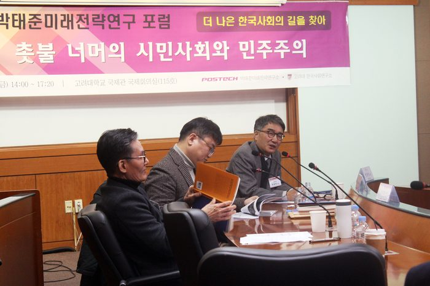

등록일 2018-03-05
지난 1월 26일
더 나은 한국사회의 길을 찾아 - 촛불 너머의 시민사회와 민주주의
주제로
고려대학교 국제관에서 개최된
제5회 박태준미래전략연구 포럼
영상이 업로드 되었습니다.
Session I 영상보기
발 제Ⅰ. 한신대 윤평중 교수 (영상시간 11:39~41:35)
- 삶의 정치와 성찰적 시민사회 - 진리정치 비판
발 제Ⅱ. 포스텍 이진우 교수 (영상시간 41:36 ~1:04:58)
- 우리는 어떻게 시민이 되는가? - 성숙한 시민사회의 실천철학
Session II 영상보기
발 제 Ⅲ. 서울대 전상인 교수 (영상시간: 02:16~25:00)
- 마음의 습관과 한국의 민주주의
발 제 Ⅳ. 서울대 김석호 교수 (영상시간: 25:00 ~ 52:55)
- 한국인의 습속과 시민성, 그리고 민주주의
종합토론 (영상시간: 1:18:50~)
발제Ⅰ. 윤평중 교수 : 삶의 정치와 성찰적 시민사회 - 진리정치 비판
발제Ⅱ. 이진우 교수 : 우리는 어떻게 시민이 되는가? - 성숙한 시민사회의 실천철학
발제Ⅲ. 전상인 교수 : 마음의 습관과 한국의 민주주의
발제Ⅳ. 김석호 교수 : 한국인의 습속과 시민성, 그리고 민주주의

